In the age of agentic workflows and AI Agents, the systems are not only able to perform tasks, but they can make their own decisions. Instead of following fixed steps, these systems can understand situations, decide what to do next, and take action with minimal human involvement.
As organizations adopt these intelligent systems, there is a growing need for a platform where these AI agents can be created, managed, and controlled effectively.
This is where AI Agent Studio comes in – a user interface provided by ServiceNow that allows administrators and developers to design, build, test, and manage AI agents in a structured way. It acts as a central place where you can define how these agents behave, what tasks they can perform, and how they interact with different systems.
In simple terms, while AI agents are responsible for doing the work, AI Agent Studio is where you define how that work should be done.
In this article, we will explore what AI Agent Studio is in detail and how it helps us manage agentic workflows and AI Agents.
What is AI Agent Studio?
AI Agent Studio, in layman’s terms, is a user interface in ServiceNow where you can design, configure, test, and manage AI Agents and Agentic Workflows that you have built on ServiceNow.
Think of it as a Control Center for your Agentic AI journey. Instead of creating, testing, or managing AI Agents at different places, AI Agent Studio brings everything together in one place. In simple words, while AI agents do the actual work, AI Agent Studio is the place where you plan, control, and improve how that work gets done.
To navigate to AI Agent Studio, go to Application Navigator in your ServiceNow instance and then type “AI Agent Studio” and click on Overview.
(Unfortunately, AI Agent Studio is not presently available in your PDIs.)
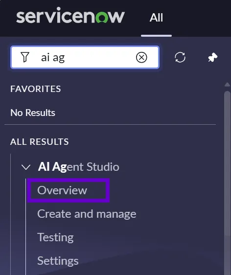
The following image shows what AI Agent Studio looks like in ServiceNow, and I feel the user interface is very intuitive, user-friendly, and not clumsy. It has so many functionalities on one screen, and even then, it is easy to navigate and understand everything, even for a first-time user.
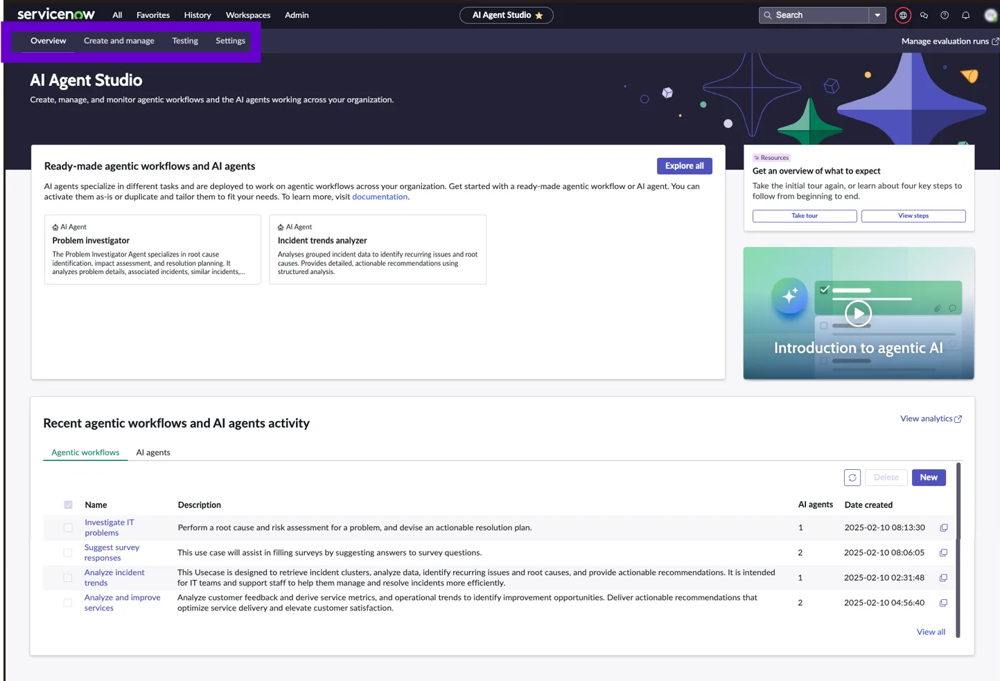
I have highlighted four important tabs that are critical to understand in AI Agent Studio:
- Overview
- Create and manage
- Testing
- Settings
1. Overview
The Overview page is designed to help you understand the essentials, get started quickly, and continue progressing as you develop AI agents and agentic workflows. When you first open the AI Agent Studio, guided tour points are available to walk you through the key features and layout.
This page has three sections where you can find the information that you must understand, begin, and continue developing AI agents and agentic workflows.
- In the Ready-made agentic workflows and AI agents section, you can find the templates and ready-made AI agents and agentic workflows that you can incorporate as-is or in custom workflows that you create.
- In the Recent agentic workflows and AI agents activity section, you can find the agentic workflows or AI agents that have been created or configured most recently. On both List views, you can create, duplicate, or delete agentic workflows or AI agents.
- The third section, “Get an overview of what to expect,” is a card to open a modal with a journey checklist that describes the steps to incorporate the AI agents into your workflows successfully, and a video that provides an overview of the AI agents and workflows to get you started. Select View steps to open this section.
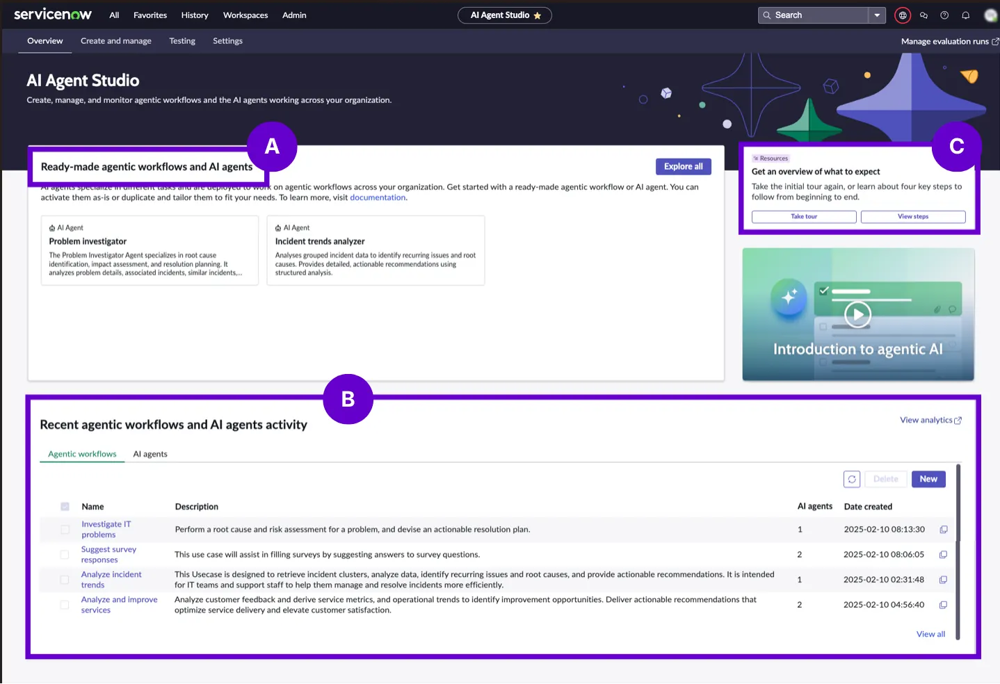
2. Create and Manage
In AI Agent Studio, the Create and Manage page acts as your central workspace where you can handle everything related to your AI agents and Agentic Workflows (also known as Use Cases in ServiceNow). Instead of going to different places to manage different components, this page brings everything together in one simple and organized view.
From here, you can easily:
- Create new AI agents or workflows based on your requirements.
- Duplicate existing ones to reuse and modify them for similar use cases.
- Manage and update the agents and workflows you have already built.
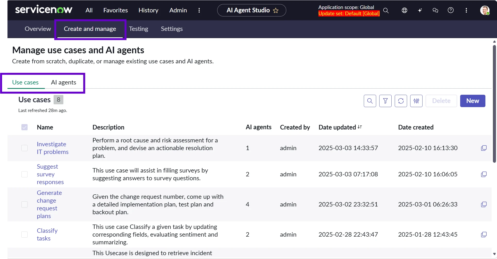
The page is divided into two main tabs:
- Use Case (Agentic Workflows)
- AI Agents
This separation helps you focus on either the workflow logic or the agent behavior without confusion.
Just to remind you, agentic workflows are made up of one or more AI agents working together.
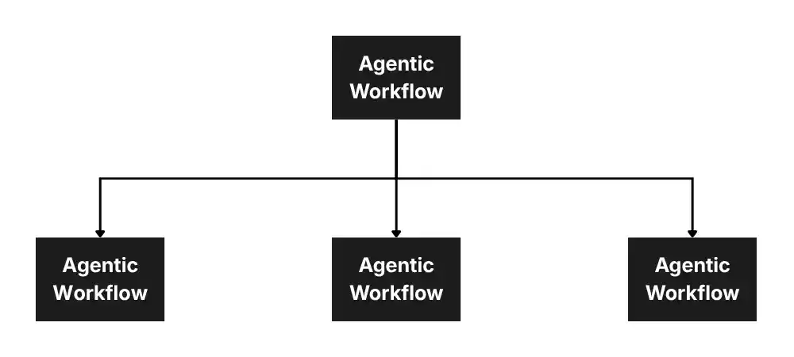
When you click on the name of any AI agent or workflow, it opens the Guided Setup. This is a step-by-step interface that helps you configure or modify your agent without needing to remember every detail. It guides you through the process, making it easier even for beginners to work with AI agents.
In the list of Agentic Workflows (Use Cases) or AI Agents, you have an option of filtering and sorting the list, which will make your life easier as you don’t have to scroll endlessly to find the relevant workflow or AI Agent you are looking for.
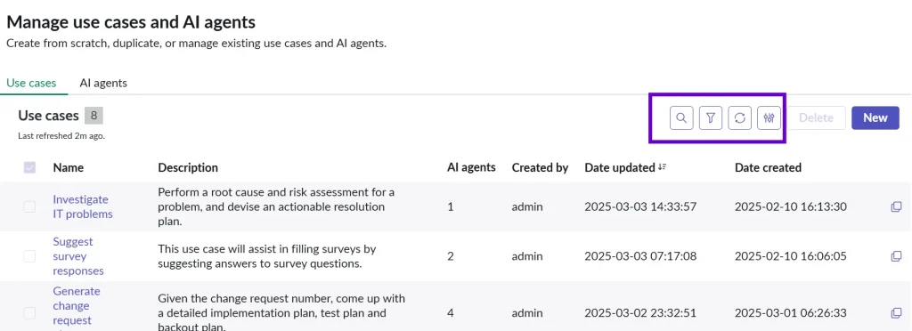
As you install different Now Assist applications, this list becomes more populated with pre-built agents and workflows. These can act as ready-made examples or starting points, which you can explore, customize, or reuse instead of building everything from scratch.
In simple terms, this page is where you build, organize, and control all your AI-driven automation in one place, making it easier to scale and manage AI agents across your organization. This is the place where you will start to build your own first agentic workflow or AI agent by clicking on the “New” button.
I’ve created many agentic workflows and AI agents using this interface, and the process has been very smooth. The setup guides you step‑by‑step, is easy to understand, and only includes the important steps you actually need. It feels very straightforward, even when building more complex workflows.
3. Testing
In AI Agent Studio, the Testing page is where you can check how well your AI agents and agentic workflows are performing. It allows you to test both manual executions and automated evaluations, so you can be confident that your agents are working as expected.
You can test your AI agents in two main ways:
- Manual Testing (Single Execution): This is useful when you want to test a specific scenario. You run the agent once with a given input and see how it responds. This helps you verify whether the agent is behaving correctly for that particular case.
- Automated Testing (Agentic Evaluations): This allows you to run multiple test scenarios automatically. Instead of checking one case at a time, you can analyze patterns, trends, and the overall performance of the agent. This is especially helpful for identifying issues that may not be visible in a single test.
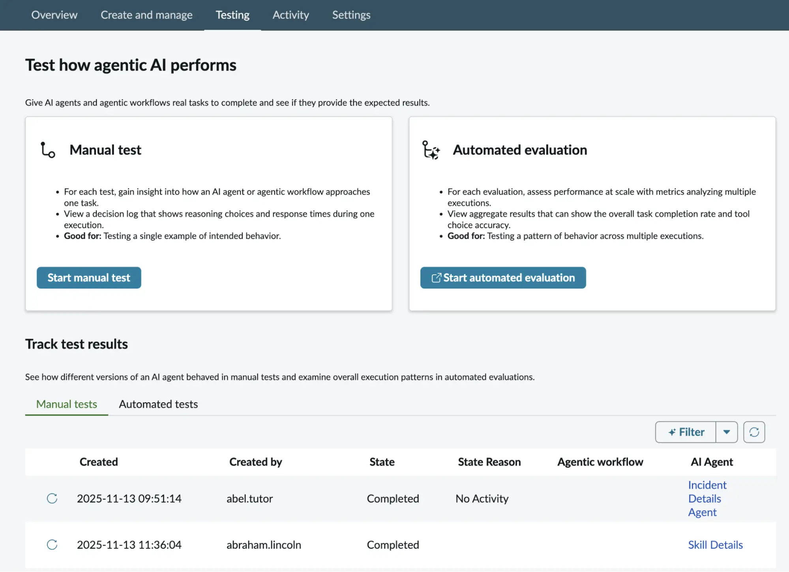
Manual Tests
There are two types of manual tests you can perform:
- Execution Test:
This checks how the AI agent or workflow performs when it is actually run. You provide input and observe the output.
- Access Test:
This verifies whether the agent has the correct permissions and security access to perform its tasks.
The testing page is divided into tabs where you can view:
- Results of manual tests
- Results of automated evaluations
For manual tests, you can easily repeat a test by clicking the replay option, which helps in quickly validating changes.
For automated tests, you can click on the test name to view detailed results, including how the agent performed across multiple executions.
For example, if you are testing an agentic workflow like “Generate Resolution Plan”, you can provide sample inputs and evaluate how accurately the agent creates the resolution steps. This helps ensure that the workflow is reliable before using it in real scenarios.
The Testing page helps you validate, improve, and trust your AI agents by allowing both quick checks and deeper performance analysis before deploying them in real-world use cases.
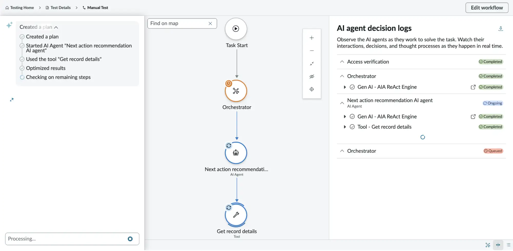
4. Settings
In AI Agent Studio, the Settings page allows you to configure important controls that ensure your AI agents behave safely and effectively. One of the key features available here is Now Assist Guardian, which helps you manage how your AI agents respond in different situations.
The Now Assist Guardian is a safety feature built into the ServiceNow AI platform. Its job is to catch any messages that might be offensive, sensitive, or risky while you’re using the Now Assist application.
For example, if Now Assist Guardian notices that an agent workflow contains an inappropriate or harmful message in one of its steps, it can automatically stop the workflow. So when you try to run or test that workflow, the Guardian will block it right away to prevent any harmful content from being used.
With Now Assist Guardian, you can define rules and safeguards for your AI agents, such as:
- Offensiveness Detection
- Prompt Injection Protection
- Long-Term Memory for AI Agents
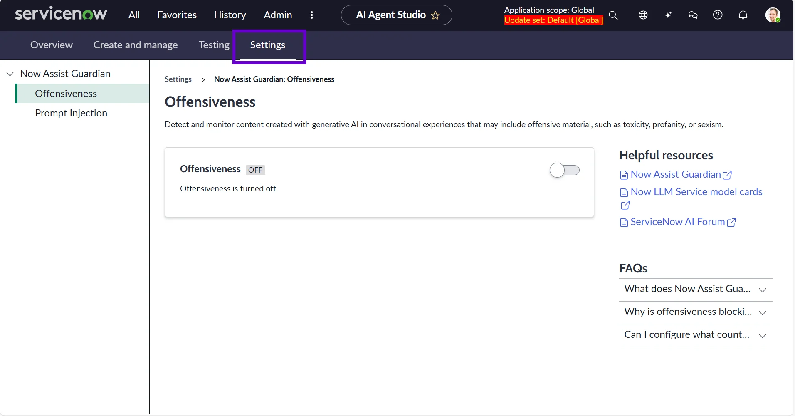
Offensiveness Detection
This helps identify and prevent the AI agent from generating inappropriate or offensive responses, ensuring a safe and professional interaction with users.
By default, it is switched off and has to be switched on by navigating to: Settings → Now Assist Guardian → Offensiveness and then switching on the toggle button.
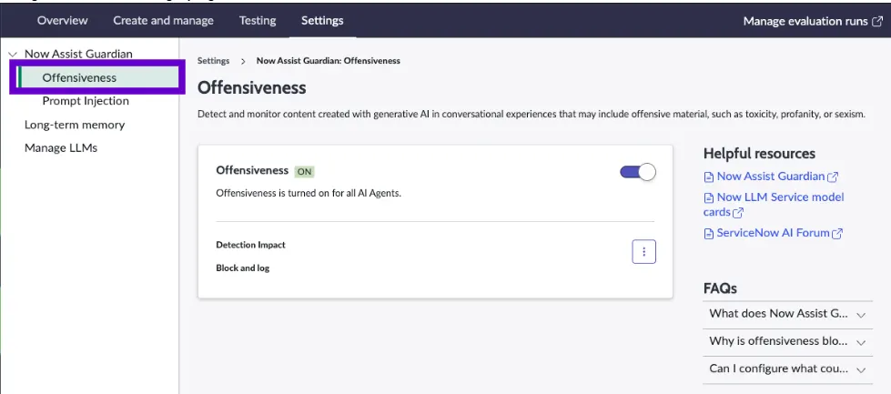
To control how the system reacts when it detects offensive or sensitive content, you can adjust the detection impact settings by clicking the More options icon.
You’ll see two choices:
- Edit: This lets you decide whether the system should only record (log) the detected issue or both block the action and log it. You can change it with the following actions:
- Click Edit.
- On the Detection Impact page, choose either Log or Block and log, depending on what you need.
- You can switch between these two options anytime.
- Click Save when you’re done.
- Export: This lets you download all the detection logs (based on offensive content) as a .CSV file. You can review these logs to understand what kinds of content are being flagged and make improvements, such as adjusting the questions being asked in conversations.
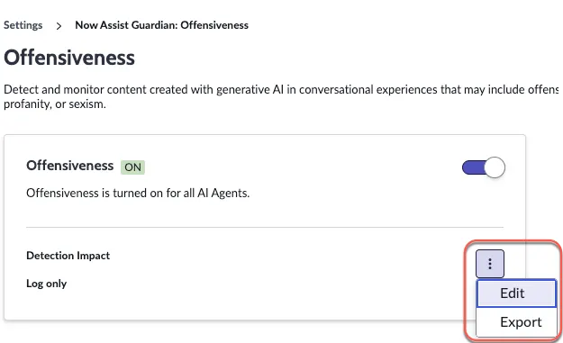
Prompt Injection Protection
AI agents can sometimes be tricked by malicious or misleading inputs. This setting helps detect such attempts and ensures that the agent does not follow unsafe or unintended instructions.
In the AI Agent Studio, go to Settings → Prompt Injection and click Configure. This will take you to the Now Assist Admin page, where you can set up Prompt Injection.
When you configure Prompt Injection for an agent workflow using the required instructions, the system will automatically look for harmful content. If it finds anything unsafe, it will block the conversation to keep things secure.
I think Now Assist Guardian is a required guardrail for our agentic workflows and AI agents, and all clients should activate it as soon as they go live in the production environment. One thing which I would add is that whenever an offensive statement or prompt injection is detected, ServiceNow should give us additional functionality to raise an incident or security incident to the concerned team so that they are aware of any threats.
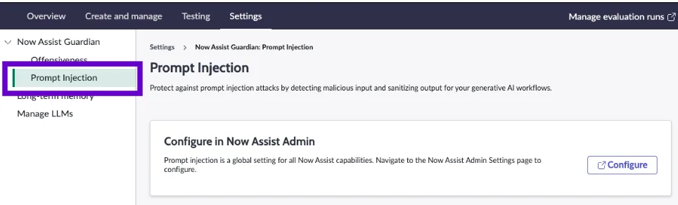
Long-Term Memory for AI Agents
This allows AI agents to remember past interactions or context over time, helping them provide more personalized and relevant responses in future interactions.
How to configure Long-Term memory:
- Go to All → AI Agent Studio → Settings.
- Click on Long‑term memory.
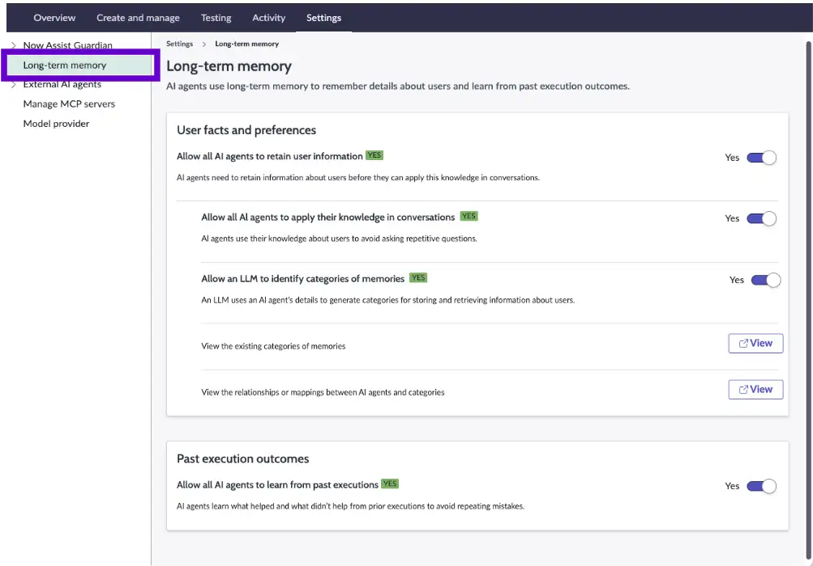
On this page, you can set how AI agents remember and use information.
User facts and preferences:
- Turn on Allow all AI agents to retain user information so agents can remember important details about users.
- Turn on Allow all AI agents to apply their knowledge in conversations so they can use what they remember when talking to users.
- Turn on Allow an LLM to identify categories of memories so the system can organize information into different groups.
- If you want to see what these memory categories are, click View.
- If you want to see which AI agents use which categories, click View again under that section.
Past execution outcomes:
- Turn on Allow all AI agents to learn from past executions so they can improve based on previous results.
- If you decide to turn this off later, you’ll get a confirmation message. Choose Disable to stop the agents from learning from past actions.
To sum up, the Settings page acts like a safety and control layer for your AI agents, ensuring they behave responsibly, securely, and consistently across different use cases.
Personal Thoughts and Final Take
From my experience exploring AI Agent Studio, one thing is very clear. This is not just another feature added to ServiceNow – it represents a shift in how we build and think about automation.
We are using tools like Flow Designer, where we define every single step, and it feels more static. We define what should happen first, what comes next, and what to do in each condition. It is structured, predictable, and completely controlled by developers, and it is great if you always follow the same steps.
But with AI Agent Studio, the approach is different.
Here, instead of defining every step, we focus more on defining the intent and expected outcome, and the AI agent figures out how to achieve it. This is a big change from step-by-step automation to intelligent decision-making systems.
While testing and working with it, I noticed:
- The agent’s ability to understand use cases is quite impressive.
- It can generate workflows or execution paths that are very close to real requirements.
- It significantly reduces the effort needed to design complex logic from scratch.
At the same time, it’s important to be realistic:
- It still requires clear prompts and well-defined use cases.
- It does not completely replace developers.
- Fine-tuning, validation, and configuration are still needed.
One key learning for me was the quality of output depends heavily on how clearly you define the problem, and most importantly, how you give prompts.
You almost need to explain the requirement in a very simple and structured way, like you are explaining it to a six-year-old kid, so that the agent can perform effectively.
Example:
- You are a Service Desk agent, and you are responsible for resolving an incident.
- Pick up the incident.
- Find KB articles, old resolved incidents, or problem tickets to find a match.
- Generate a resolution based on past tickets.
The above example is a reference that you can’t just tell the Agentic AI to resolve the incident – you have to provide clear and concise prompts and its duties.
If you want to see how to test an agentic workflow, refer to my previous article covering the topic.
Summary
AI Agent Studio is a strong step towards the future of agentic AI and autonomous workflows in ServiceNow. It brings together AI, workflows, data, and integrations into a single platform where systems can not only execute tasks but also decide what needs to be done.
For developers and architects, this changes the role from just building workflows to designing intelligent systems. For organizations, it opens the door to faster automation, better decision-making, and improved efficiency.
In other words, AI Agent Studio helps you decide what tasks to execute.
We are still in the early stages of this evolution, but the direction is clear. AI Agent Studio is not just enhancing automation – it is redefining how work gets done on the platform.
AI Agent Studio is not about replacing humans – it’s about enabling systems to assist, decide, and act smarter, so humans can focus on higher-value work.